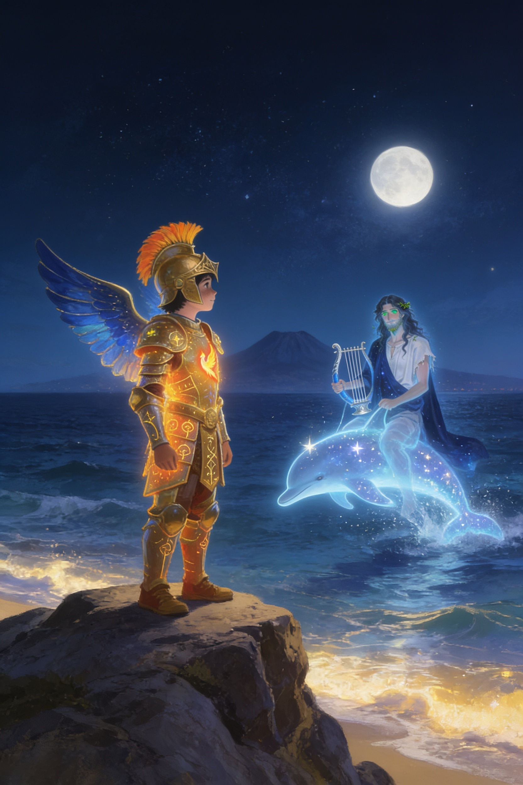
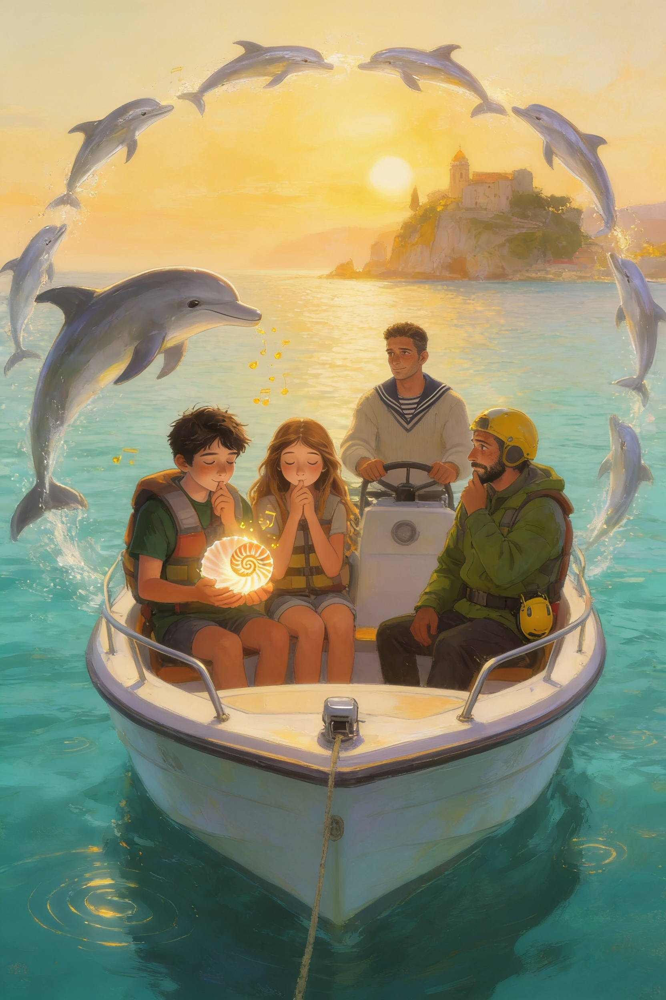
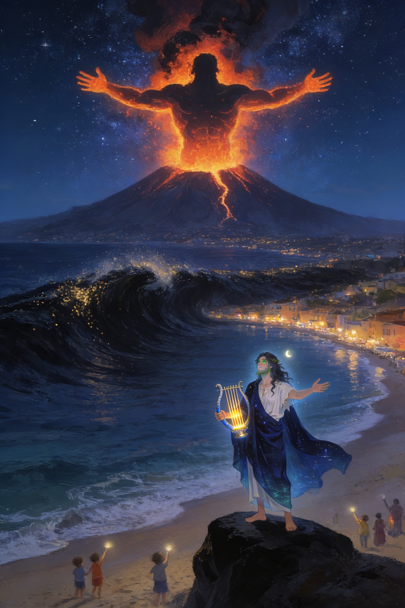
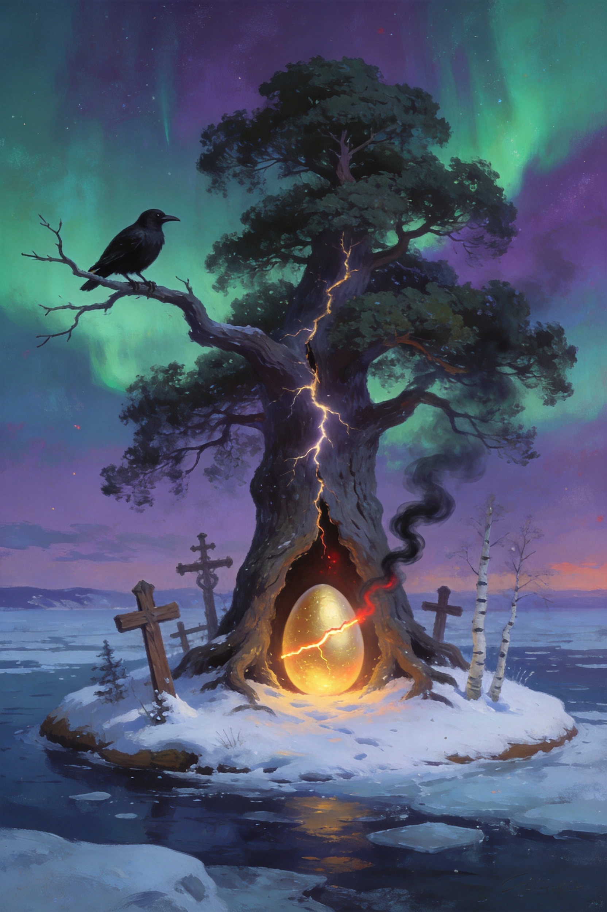

Il Custode
e la Lira
del Mare
Il Custode dell'Etna · Libro 3
Vlad Editore

Il Custode dell'Etna · Libro 3
Vlad Editore
Il Custode dell'Etna · Libro 3
Capitolo 1
✦ ✦ ✦
Il signor Nino non aveva dormito. Si vedeva dalle occhiaie, dal cappello messo al contrario e dal modo in cui teneva il rotolo di papiro, con due mani, come si tiene una cosa che potrebbe esplodere.
— L'ho trovato ieri notte, sul palco del Teatro Antico — disse a Vlad e a Ludovica, seduti sulla panchina nuova, sotto il pino. — Ho portato a casa il papiro e non l'ho aperto. Le impronte bagnate, invece, erano asciutte stamattina. Come se non ci fossero mai state.
— Ci sono le foto? — chiese Ludovica.
— Le ho fatte. Ma nelle foto non si vede niente. Soltanto il legno.
Posò il rotolo sulle ginocchia di Vlad. Il filo d'oro che lo legava brillava piano, come se fosse caldo.
— Voi sapete cose che io non so. Io so soltanto che stanotte, mentre chiudevo, ho sentito una musica che non è di questo secolo.
Alle sei di sera, con il buio già sceso e la luna piena alta sul mare, la Squadra Etna era di nuovo in biblioteca, con il papiro aperto sul grande tavolo di legno e la professoressa Siligato in piedi accanto a loro, con gli occhiali sulla punta del naso.
— Posso? — chiese, e sfiorò il papiro con un dito. — Sapete, io insegno italiano. Ma il greco antico l'ho studiato per anni, all'università, e ogni tanto, fortunatamente, serve ancora.
Si chinò sulle lettere antiche, con le labbra che si muovevano. Dopo qualche minuto, lesse a mezza voce:
— «Il primo atto è finito. Il secondo comincia.»
— Questo lo avevamo già letto — disse Thomas.
— Ma c'è altro. — La prof proseguì, con la voce sempre più bassa. — «Quando la luna avrà mangiato se stessa, la mia lira dirà l'ultima nota, e il gigante si sveglierà, e nessuno lo fermerà. Il Custode dell'Alba venga al mare di Naxos, a Capo Schisò, e ascolti la Notte.»
Un silenzio di vetro cadde sulla biblioteca. Fuori, dalla finestra, si vedevano la luna piena e, sotto, il mare nero.
— Capo Schisò — ripeté Vlad, piano. — È dove è caduta la stella.
— Dove hai trovato la Piuma — disse Ludovica, che aveva già aperto il quaderno. — Non può essere una coincidenza.
— Niente è una coincidenza, in questa storia — mormorò Wijdane.
La prof Siligato si tolse gli occhiali e li pulì con la manica.
— Naxos fu la prima colonia greca di Sicilia — spiegò. — Fondata nel 734 prima di Cristo, proprio dove oggi c'è Giardini Naxos. Arrivarono con le navi, e portarono gli dèi, i teatri, e le canzoni.
— E il «Custode dell'Alba»? — chiese Sofia.
— Credo sia Vlad — rispose la prof, con un sorriso un po' triste. — L'alba è il sole. La Piuma. Chi scrive questo conosce il tuo nome meglio di me.
— E «la Notte»? — chiese Simone. — Chi è la Notte?
Nessuno rispose. Ma Vlad sentì il ciondolo battere sul petto, due volte. Come se anch'esso avesse una domanda.

— C'è un'altra cosa — disse Manuela, e tirò fuori dallo zaino un quaderno pieno di righe e di numeri. — Da una settimana registro le scosse dell'Etna. Ho usato l'applicazione di Thomas e il sismografo del museo.
Aprì una pagina e la girò verso il gruppo.
— Guardate. Di giorno, quasi niente. Piccole scosse, molto lontane, impossibili da sentire. Di notte, invece, cominciano alle due e sette minuti. Ogni notte, un po' prima e un po' più forti.
— Come un orologio — mormorò Thomas.
— Come un cuore che accelera — disse Reyana.
Wijdane chiuse gli occhi e ragionò a voce alta.
— Di giorno c'è la Piuma. Il sole, la luce. Di notte non c'è niente a tenerlo calmo. Ma una volta, durante la notte, c'era qualcosa. Altrimenti il gigante si sarebbe svegliato duemila anni fa.
— Qualcuno cantava — sussurrò Mia. — Ogni notte.
Si guardarono. Per la prima volta, nessuno aveva voglia di ridere.
— E poi c'è il mare — disse Aurora. Aprì il telefono e girò lo schermo verso gli altri.
In una fotografia, scattata di notte dal lungomare di Giardini Naxos, la baia era piena di una luce azzurra. Non una luce di lampioni: una luce che veniva dall'acqua, sottile e viva, come se sotto il mare ci fosse una città addormentata.
— Da tre notti — disse. — I pescatori ne parlano al bar. Dicono che ci sono centinaia di delfini. Arrivano di sera, nel golfo, e restano in cerchio fino all'alba.
— Delfini? — chiese Salvatore, con aria speranzosa. — Cioè... pesce?
— No, Salvatore. Mammiferi marini.
— E si mangiano?
— No! — risposero tutti insieme.
Salvatore alzò le spalle.
— Era per sapere.
Ludovica chiuse il quaderno e guardò Vlad.
— Capo Schisò, il golfo di Naxos, i delfini, la lira. Sta succedendo tutto nello stesso posto.
Quella sera, in cucina, nonna Tanya ascoltò il racconto con il cucchiaio di legno fermo sul bordo della pentola.
— Arione — ripeté piano. — Lo ricordo, questo nome. Lo diceva mia nonna, quando ero bambina. Le fiabe russe parlano dell'Uccello di Fuoco, ma la nostra famiglia conservava anche una frase greca, che passava di generazione in generazione.
— Quale? — chiese Vlad.
— «Se senti una lira nel vento, non rispondere finché non sai chi la suona.»
Vlad guardò il ciondolo, che brillava piano sul tavolo.
— Ma se è un amico? Se anche lui è uno che è rimasto indietro?
La nonna lo guardò a lungo.
— Hai il cuore giusto, Vladik. È per questo che la Piuma ti ha scelto. Ma un cuore giusto non basta, serve anche la testa. Andrai. Lo so che andrai. Ma andrai con la Piuma al collo, con Ludovica accanto e con me nel furgone, a dieci metri.
— Stanotte?
— Stanotte c'è la luna piena. Se qualcuno ti chiama, vuole che tu vada stanotte.
A mezzanotte meno dieci il vecchio furgone di nonna Tanya si fermò sul lungomare di Giardini Naxos, con i fari spenti.
La luna piena stava alta sul golfo e metteva una strada d'argento sull'acqua. Il mare, davvero, brillava di una luce azzurra e profonda, che non veniva né dal cielo né dai lampioni. Lontano, sulla punta della baia, si vedevano le rocce nere di Capo Schisò, come il dorso di un animale addormentato.
— Io resto qui — disse la nonna, con il thermos in grembo. — Dieci metri. Non uno di più.
Vlad e Ludovica scesero sulla sabbia. Non c'era nessuno. Il vento era caduto, e le onde arrivavano piano, una dopo l'altra, come se contassero fino a dieci.
Poi, in mezzo al mare, a cinquanta metri dalla riva, uno spruzzo argenteo salì verso la luna.
Un delfino. E dietro di lui un altro, e un altro ancora.
— Vlad — sussurrò Ludovica, e gli strinse il braccio. — Guarda.
✦ ✦ ✦
Il Custode dell'Etna · Libro 3
Capitolo 2
✦ ✦ ✦
I delfini arrivarono a decine, poi a centinaia. Sbucavano dall'acqua nera uno dopo l'altro, con il dorso lucido come d'argento, e nuotavano in cerchio al centro della baia, sempre più stretti, come i petali di un fiore che si chiude.
Il mare, sotto di loro, si accese. Un chiarore azzurro salì dal fondo, e la superficie cominciò a brillare come un cielo capovolto, pieno di stelle.
— Non ho mai visto niente di così bello — sussurrò Ludovica.
— Neanch'io — disse Vlad. Sentiva la Piuma battere sul petto, forte e calda. — Ma qualcuno ci sta chiamando.
Una musica leggerissima si mescolò al rumore delle onde. Era una melodia di corde, dolce e antica, che non sembrava venire da nessuna parte e da ovunque. L'aria profumava di incenso e di sale.
— È la stessa musica del teatro — disse Ludovica.
Il cerchio dei delfini si aprì in due, come le ante di una porta. E dal centro avanzò una barca.
Non era una barca vera. Era fatta di luce di luna, trasparente come l'acqua, con una prua alta e curva come quelle delle navi greche. Scivolò sulle onde senza rumore, fin quasi alla riva.
Sulla prua, in piedi, c'era un uomo.
Era alto e magro, con i capelli lunghi e ondulati, e una barba corta in cui brillavano minuscole alghe. Portava una tunica bianca logora e un mantello blu scuro, che sembrava fatto di cielo notturno e di mare insieme. Gli occhi, verdi come l'acqua di una grotta, guardavano Vlad con una gioia timida. In mano teneva una lira d'argento, e l'ultima nota della sua canzone gli si spense tra le dita.
— Custode dell'Alba — disse. Parlava in greco, ma le parole arrivavano a Vlad in italiano, portate dal vento. — Finalmente.
— Chi sei? — chiese Vlad, con un filo di voce.
L'uomo si inchinò, con una mano sul cuore.
— Mi chiamo Arione di Metimna. Sono un cantore. E sono, da duemilacinquecento anni, il Custode della Notte.
Ludovica fece un passo indietro. Vlad restò dov'era, con il cuore che gli batteva in gola, e ricordò la frase della nonna: «Non rispondere finché non sai chi la suona».
— Sei tu che hai aperto la porta a Ettore? — chiese.
Arione non negò. Per un attimo, nei suoi occhi verdi passò un'ombra.
— Sì. Sono stato io. — Abbassò lo sguardo sulla lira. — Cercavo qualcuno che potesse aiutarmi. Qualcuno che avesse conosciuto la solitudine, come me. Ho trovato un ragazzo in fondo a un buco, e gli ho parlato con gentilezza. Forse troppa. Forse ho sbagliato a non dirgli tutta la verità.
— Ettore voleva svegliare il gigante — disse Ludovica.
— Voleva tornare a casa. È diverso. — La voce di Arione si fece sottile. — Non ho mai voluto il male. Ho soltanto fatto un errore, e vorrei rimediare.
Vlad lo guardò a lungo. Non vide un nemico. Vide qualcuno che sembrava stanco da secoli.
— Tua nonna fa bene a non fidarsi — aggiunse l'uomo, con un sorriso triste, come se avesse letto il suo pensiero. — Anch'io, al suo posto, non mi fiderei di me.
— Che cosa vuoi da noi? — chiese Ludovica, con il quaderno stretto al petto.
— Aiuto. — Arione alzò la lira e passò le dita sulle corde, ma ne contò soltanto otto, e fra la settima e l'ottava si apriva uno spazio vuoto. — Tifeo, il gigante sotto la montagna, non dorme da solo. Ha bisogno di due custodi. Il Giorno e la Notte. Tu sei il Giorno. Io la Notte.
Pizzicò una corda, e la nota si sparse sul mare. I delfini tuffarono tutti insieme, e dal fondo salì un riflesso dorato.
— Il Giorno veglia di giorno, con la luce della Piuma. La Notte veglia di notte, con il canto della lira. Così è stato per secoli, finché una corda si è spezzata. Una soltanto. Ma basta.
— Per questo la terra trema di notte — mormorò Vlad.
— Ogni notte un po' di più. — Arione chiuse gli occhi. — Alla prima notte senza luna, la corda che manca farà tacere la mia lira. E il gigante si sveglierà.
— Quando? — chiese Ludovica.
— Fra sette notti.

— Perché non vi siete mai incontrati, tu e i Custodi del Giorno? — chiese Ludovica. — Se lavorate insieme da secoli...
Arione sorrise, ma era un sorriso di sale.
— Il Giorno non vede la Notte. Quando c'è il sole, nessuno guarda le stelle. E quando c'è il buio, nessuno ricorda la luce. — Guardò il mare. — Per questo ci siamo dimenticati a vicenda. E per questo, a poco a poco, il mondo si è dimenticato di me.
— Noi non ti dimentichiamo — disse Vlad.
— Lo spero. — La voce di Arione tremò, appena. — Perché per aggiustare la lira servono tre canti, e io non posso trovarli da solo. Servono delle voci che stiano ancora sulla terra. Servono ragazzi.
Tese una mano, aperta, verso Vlad.
— Domani notte, qui, a mezzanotte, ti racconterò la mia storia. Non con le parole. Con la lira. Potrai vederla con i tuoi occhi, come hai visto quella di Ivan.
— Come fai a sapere di Ivan? — chiese Vlad.
— So molte cose, Custode. Ho tanto tempo per ascoltare.
Dalla strada arrivò il rumore di una portiera. Nonna Tanya scese dal furgone, con il foulard stretto sotto il mento e il cucchiaio di legno ben in vista. Attraversò la sabbia come se fosse una passerella e si fermò davanti alla barca di luce.
— Arione — disse.
Il cantore si inchinò più a fondo.
— Tatiana, discendente di Ivan l'Orfano. Ti riconosco dal portamento: hai gli occhi di tuo padre.
— Mia nonna mi diceva di non rispondere alla tua lira. — La nonna incrociò le braccia. — Ma mio nipote ti ha risposto.
— Tua nonna era saggia. Io, forse, un po' meno.
— Stai lontano da lui — disse la nonna, con voce calma e dura come un sasso — finché non mi dici che cosa vuoi, davvero.
— Voglio quello che vuole lui: che il gigante dorma, e che nessuno si faccia male. — Arione la guardò dritto negli occhi. — Domani a mezzanotte, qui. Vieni anche tu, se vuoi.
Fece un cenno con la lira. La barca di luce si sciolse in scintille, e i delfini rientrarono in mare, uno alla volta.
Il mare tornò scuro. La musica si spense, e nel golfo restò soltanto la luna.
— Mi fido? — chiese Vlad, piano.
Ludovica ci pensò un po'.
— Non ancora.
— Brava — disse nonna Tanya. — Qualcuno che chiede troppo, troppo gentilmente, va guardato con attenzione. Ma non è detto che sia un cattivo. A volte è soltanto qualcuno che è stato solo troppo a lungo.
Tornarono verso il furgone. Si erano appena seduti, quando sotto di loro la terra tremò.
Fu una scossa lunga, sorda, che fece vibrare il parabrezza e saltare il thermos sul sedile. Nonna Tanya guardò l'orologio sul cruscotto.
— Le due e sette — disse.
E dal mare, lontano, dalle rocce nere di Capo Schisò, arrivò un suono: una nota di lira che si spezzava a metà, come un respiro che manca.
✦ ✦ ✦
Il Custode dell'Etna · Libro 3
Capitolo 3
✦ ✦ ✦
La domenica sera, a mezzanotte, Vlad e Ludovica tornarono sulla sabbia di Capo Schisò, con nonna Tanya a dieci metri e un freddo di novembre che passava sotto i cappotti.
Questa volta Arione li aspettava già sulle rocce nere. Senza barca, senza delfini. Solo lui, con il mantello che gli fluttuava sulle spalle come se avesse sempre attorno un po' d'acqua.
— Siete venuti — disse, e sorrise, come un bambino a cui hanno dato un regalo. — Prendetevi per mano. Anche tu, Tatiana, se vuoi.
— Io tengo una mano sulla spalla di mio nipote — disse la nonna. — E l'altra sul cucchiaio.
Arione rise piano. Poi appoggiò le dita sulla lira, e per la prima volta ne uscì una melodia intera, di otto corde, con un respiro in più, fra la settima e l'ottava, dove una nota avrebbe dovuto esserci.
Il mare, intorno a loro, si fece trasparente. Poi nero. Poi pieno di stelle.
Quando Vlad aprì gli occhi, era giorno, e il mare era più azzurro di quanto lo avesse mai visto. Sulla spiaggia, dove adesso c'erano il lungomare e i bar, non c'era niente. Soltanto sabbia dorata, e navi.
Navi di legno, lunghe e strette, con la prua dipinta e un grande occhio sulla fiancata. Erano tirate in secca una accanto all'altra. Uomini e donne con tuniche chiare scaricavano sacchi, anfore, vasi, e due bambini correvano sulla spiaggia con un cane.
— Naxos — sussurrò Ludovica. — La prima città greca di Sicilia.
— Settecentotrentaquattro anni prima di Cristo — disse la voce di Arione, accanto a lui, anche se non lo si vedeva. — Quel giorno scesi da quella nave, la terza. Avevo vent'anni. Ero il più giovane cantore di Metimna, e portavo una lira con nove corde.
Dalla nave più grande era sceso un uomo anziano, con una barba bianca e un mantello rosso. Si inginocchiò sulla sabbia e baciò la terra.
— Teocle, il capo dei coloni — spiegò Arione. — Voleva costruire una città. Non sapevamo che la terra, sotto, aveva già un inquilino.
Quella notte, mentre i coloni dormivano sotto le tende, la terra tremò. Un brontolio profondo, lungo, corse dal vulcano alla spiaggia. Nelle tende si accesero le torce, qualcuno gridò, e un bambino si mise a piangere.
Vlad vide il giovane Arione uscire dalla sua tenda, scalzo, con la lira in mano. Era più alto e più magro di come lo conosceva ora, e senza una sola alga nella barba. Si arrampicò sulle rocce nere, e si fermò davanti alla montagna, che sbuffava fumo rosso nel buio.
— Ho avuto paura — disse la voce di Arione, dal presente. — Ma ho fatto l'unica cosa che sapevo fare. Ho cantato.
Il giovane toccò le corde. La musica uscì piano, come una ninnananna: una melodia che Vlad conosceva, cambiata dal tempo ma non troppo.
Il fumo rosso si fece grigio. Il brontolio si spense. E dal profondo della montagna, per la prima volta in migliaia di anni, il gigante tornò a dormire.
Nelle tende scoppiò un applauso sottile, di gente che non capiva, ma sentiva di essere salva.

— Teocle mi chiamò all'alba — continuò la voce. — Mi disse: «Arione, se tu canti, la montagna dorme. Resta. Ogni notte, canta. E noi costruiremo la città». E io ho detto sì.
Vlad guardò il giovane cantore, che sorrideva fiero, con il sole in faccia.
— Ero felice. Mi sentivo importante, per la prima volta. Ma una notte è diventata mille, e mille notti sono diventate diecimila. La città cresceva: un tempio, un teatro, un porto. Mi portavano da mangiare e mi ringraziavano. Poi sempre meno. Poi, più nessuno.
La scena cambiò. Passarono gli anni come pagine: i capelli del giovane si fecero grigi, poi bianchi. La città si riempì di gente che passava di fretta davanti alle rocce nere. Nessuno guardava il vecchio con la lira. Qualcuno, forse, lo scambiava per uno scoglio.
— Sono morto cantando — disse Arione. — Ma il canto non poteva fermarsi. Così non mi sono fermato nemmeno io. Sono diventato mare e notte e ricordo. E nessuno, mai, mi ha detto grazie.
Ludovica aveva gli occhi lucidi. Nonna Tanya, accanto a loro, non diceva niente, ma stringeva la spalla di Vlad con più forza.
— Poi, un giorno, nel cielo comparve una luce nuova — proseguì Arione. — Veniva da lontano, dal Nord, in un medaglione, sul petto di un uomo con la barba grigia. La Piuma. Il Custode del Giorno.
Vlad vide un uomo che scendeva da una nave, con i capelli ricci e gli occhi castani, e un ciondolo luminoso al collo. Aveva qualcosa di Ivan, e qualcosa di sua nonna.
— Da allora i Custodi del Giorno vegliarono di luce, e io di buio. Ma non ci siamo mai incontrati. Loro dormivano la notte, e io non potevo uscire di giorno. — La voce si fece sottile. — Io li guardavo. Ogni generazione. Ho cantato per i loro sogni, quando dormivano. Ho conosciuto i loro nomi, uno ad uno. Ho conosciuto Ivan, e suo figlio, e tua nonna, Vlad, quando era bambina. Nessuno di loro sapeva che io fossi lì.
— Per questo sai tante cose — mormorò Ludovica.
— Ho avuto tanto tempo per ascoltare. Ma non per parlare.
— E la corda? — chiese Vlad. — Quella che si è spezzata?
Arione rimase un po' in silenzio. Sulla sabbia dorata, intorno a loro, la scena era sparita: era tornata la notte di novembre, con le rocce nere e le stelle.
— Si è spezzata un mese fa — disse. — Nell'altro mondo, quello in cui è finito il ragazzo, Ettore, qualcuno ha cantato una ninnananna tristissima. La lira risponde a ogni ninnananna del mondo. E quella era così sola, così piena di vuoto, che la nona corda non ha retto.
— Ettore — mormorò Vlad.
— Ho cercato di aiutarlo. Credevo che un ragazzo lasciato indietro potesse sostituirmi, aiutarmi a cantare. Ma ho sbagliato: gli ho dato una speranza che non potevo mantenere. — Guardò il mare. — Mi dispiace. Ho fatto un errore, e ne pago ancora il prezzo.
Vlad gli credette. Credette alla stanchezza nella sua voce, e al modo in cui teneva la lira, come si tiene una cosa che si ama e non si riesce a salvare.
Non vide lo sguardo di Ludovica, che per un attimo, dietro di lui, si era fatto molto attento.
— Per riparare la lira servono tre canti — disse Arione. — Il canto della pietra, il canto del vento, il canto del mare. Tre voci della terra, che nessuno ascolta più. Solo dei ragazzi possono ancora sentirle.
— Dove? — chiese Vlad.
— La pietra canta nelle Gole dell'Alcantara, dove la lava si è raffreddata a colonne. Il vento canta a Castelmola, sulla roccia del castello. E il mare... — Sorrise. — Il mare canta qui, dove ha sempre cantato, ma ha bisogno di qualcuno che lo ascolti dal largo.
— E dopo? — chiese Ludovica. — Quando avremo i tre canti?
— La lira tornerà intera. E la Notte potrà vegliare di nuovo.
Ludovica guardò Vlad. Vlad guardò la nonna, che sospirò, poi annuì.
— Restano sei notti — disse Arione. — Posso contare su di voi?
— Sì — rispose Vlad, senza esitare.
— Faccio il gruppo — disse Ludovica, già con il telefono in mano. — Ci serve tutta la squadra.
Ma, mentre digitava, guardò un'altra volta Arione, che sorrideva al mare, e si chiese perché non avesse mai detto come si sarebbe riparata la nona corda.
✦ ✦ ✦
Il Custode dell'Etna · Libro 3
Capitolo 4
✦ ✦ ✦
Il lunedì pomeriggio, dopo la sesta ora, il furgone di Turi risalì la strada verso le Gole dell'Alcantara, con otto ragazzi stretti nel sedile posteriore e due borse piene di stivali, caschi e giubbotti salvagente.
— Vi spiego le regole — disse Turi, mentre parcheggiava. — Primo: si cammina nell'acqua, e l'acqua è gelida, dieci gradi. Secondo: nessuno si stacca dal gruppo. Terzo: se dico «fermi», si sta fermi.
— E il quarto? — chiese Martina, già in piedi sul predellino.
— Il quarto — disse Turi, e per un attimo guardò Vlad — è che nessuno rimane indietro.
Con loro c'erano Ludovica, Manuela, Jaela, Mia, Wijdane e Sofia. Gli altri, a casa, erano in collegamento con il telefono, pronti a dare una mano da lontano.
La gola si apriva davanti a loro come una ferita nella montagna: due pareti nere di roccia, alte cinquanta metri, e in mezzo un fiume verde, verde come una bottiglia, che scorreva silenzioso.
Entrarono nell'acqua in fila, gli stivali che affondavano nella ghiaia. Il freddo salì fino alle ginocchia come una mano.
— Mamma mia! — gridò Martina, ridendo e battendo i denti. — È bellissimo e terribile!
Manuela, che aveva letto tre libri prima di partire, camminava con gli occhi alle pareti.
— Guardate le colonne — disse. — Non sono scolpite. È lava raffreddata. Quando una colata si raffredda in fretta, si crepa in figure a sei lati, uguali, come l'alveare di un'ape gigante. Si chiamano colonne esagonali.
— Sembrano le canne di un organo — mormorò Mia.
— Infatti — disse Wijdane, a occhi socchiusi. — Se l'aria passa in una canna, la canna suona. Se l'acqua passa fra le canne, le fa vibrare tutte insieme.
Fecero ancora qualche passo. Il fiume si strinse, e le pareti si avvicinarono tanto che il cielo diventò una striscia sottile, sopra le loro teste. In fondo alla gola, dove l'acqua girava in una piccola curva, la parete era tutta una fila di colonne di altezze diverse, grandi e piccole, come l'organo di una cattedrale.
— Eccolo — disse Vlad, e il ciondolo, sotto il giubbotto, vibrò come un diapason. — L'organo di pietra.
Si fermarono davanti alla parete. Dalle fessure tra le colonne usciva un sussurro basso, quasi un respiro: un suono che c'era e non c'era, fatto d'acqua che gocciolava e d'aria che passava. Ma qualcosa mancava. Era come una canzone a cui avessero tolto metà delle note.
— Mia — disse Wijdane, piano. — Prova a cantare.
Mia fece un passo avanti e cantò una nota, limpida e alta, che rimbalzò sulle pareti. Per un attimo, le colonne risposero con un tremolio. Poi tacquero.
— Non è la nota giusta — disse Sofia, che teneva le mani sulle orecchie, come per ascoltare meglio. — Il suono è troppo alto. La pietra vuole una nota più bassa. Più antica.
Mia riprovò, più grave. Niente.
Fu allora che Jaela alzò una mano.
— Ragazzi — disse. — L'acqua sta salendo.
Era vero. Il livello del fiume saliva, centimetro dopo centimetro, e la corrente spingeva contro le ginocchia. Non pioveva, non c'era un temporale, ma la gola sembrava respirare, e l'acqua con lei.
— Fermi! — gridò Turi. La sua voce fu quella di una guida vera. — Tutti sulla sporgenza. Subito, in fila. Jaela, la corda!
Jaela corse sulla roccia come una gazzella. Legò la corda a una colonna e la lanciò, e uno dopo l'altro i ragazzi si arrampicarono su una cengia di pietra, a un metro sopra l'acqua. Martina fu la prima, Mia la seconda. Wijdane, Sofia e Manuela le seguirono. Vlad aiutò Ludovica a salire.
Turi rimase giù, nell'acqua gelida, ad aspettare l'ultimo.
— Uno — contò, con la voce che tremava. — Due. Tre. Quattro. Cinque. Sei. Sette. Otto.
Si fermò, e li contò di nuovo. Non per sbaglio: di proposito, con il dito, uno ad uno.
— Otto — ripeté. — E nove con me.
Salì sulla cengia per ultimo. Aveva gli occhi lucidi, e sorrideva.
— Vent'anni fa — disse, a voce bassa — qualcuno non ha contato abbastanza. Questa volta contiamo due volte.

L'acqua si fermò a un palmo dalla cengia. Il fiume non saliva più, come un animale che aspetta. Dalle colonne di basalto, davanti a loro, ricominciava il sussurro.
— Ha aspettato che fossimo al sicuro — mormorò Manuela. — Come per dire: ora puoi.
Mia chiuse gli occhi. Ascoltò la gola, e il suono dell'acqua, e il respiro profondo delle pareti. Poi, senza fretta, cantò una nota bassa, quasi un mormorio. Era la nota che si sentiva quando si appoggia l'orecchio a una pietra fredda.
Le colonne risposero.
Prima una, in fondo, poi un'altra, poi dieci, poi cento. Ognuna aveva la sua voce, grave, piena, come le canne di un organo antico, e tutte insieme fecero un accordo che riempì la gola da una parete all'altra. L'acqua tremò. I cerchi di luce corsero sulla superficie. E il suono, dolce e profondo, salì lungo le pareti fino al cielo.
— Il canto della pietra — sussurrò Vlad.
Dalla fessura più alta si staccò un piccolo sasso, e cadde ai piedi di Mia. Era di basalto nero, a sei lati, grande come una noce, con un foro minuscolo in mezzo.
Mia raccolse il sasso. Lo portò alle labbra, per soffiarci dentro, e ne uscì un suono limpido, di pietra e d'acqua insieme.
— È un piccolo flauto — disse. — Il canto della pietra, in tasca.
Lo diede a Vlad, che lo mise al sicuro nello zaino, in una tasca interna. Per un attimo, mentre lo toccava, gli sembrò di sentire un'eco lontanissima: una nota di lira, gentile, che diceva grazie.
La corrente si abbassò. Tornarono a valle camminando adagio nell'acqua, con la luce sulle pareti che diventava rosa. Turi camminava in coda.
— Posso dirvi una cosa? — disse, quando furono vicini al furgone. — Da vent'anni porto i gruppi alle grotte, e ogni volta, all'uscita, mi viene la nausea. Ho paura di contare sbagliato. Oggi, per la prima volta, non l'ho avuta.
— Perché? — chiese Mia.
— Perché li ho contati con voi. — Sorrise, in quel suo modo timido. — È più facile non sbagliare, quando si è in tanti.
Quella notte, a mezzanotte, in riva al mare di Capo Schisò, Vlad mostrò il piccolo flauto di basalto ad Arione, che lo prese con due mani, come un tesoro.
— Il primo canto — disse. Gli occhi gli brillavano di un verde profondo. — Duemila anni che non lo sentivo. Grazie, Custode.
Posò il sasso sulla lira, dove si fuse lentamente con il legno, come se ne facesse parte da sempre. Una corda tremò. La musica, per un istante, fu un po' più piena.
— Ne restano due — disse. — Il vento, e il mare.
Sorrise, e per un secondo Vlad vide, dietro quel sorriso, una cosa che non aveva mai visto: qualcosa di affamato.
Poi la sensazione sparì. Arione era soltanto un cantore stanco, che sorrideva a due ragazzi.
Ludovica, sulla sabbia, aprì il quaderno e scrisse una riga, a matita, in piccolo:
«La nona corda: come si ripara? Non l'ha ancora detto.»
Poi la sottolineò, due volte.
✦ ✦ ✦
Il Custode dell'Etna · Libro 3
Capitolo 5
✦ ✦ ✦
Il martedì pomeriggio, il furgone del panettiere Pippo sbuffò su per i tornanti di Castelmola, con la scritta Pane caldo sulla fiancata e nove ragazzi in fondo, schiacciati fra i sacchi di farina.
— Vi avviso — disse Pippo, con le mani sul volante — che per salire al castello ci sono quattrocento gradini. Per questo ho portato la merenda.
— Quattrocento? — chiese Salvatore, con un filo di voce.
— Ho portato panini con le mandorle, pizza, e granita. La granita, appunto, è per il ritorno.
Salvatore riprese colore.
Il gruppo era una squadra mista: Vlad, Ludovica, Thomas, Alice, Beatrice, Aurora, Vittoria, Riccardo e Salvatore. Le altre avevano da fare: Mia riposava la voce, Wijdane controllava gli orari della luna.
Il castello li guardava dall'alto, sopra un picco di roccia nuda, come un vecchio dente. E il vento, lassù, soffiava già forte.
Salirono per la scalinata di pietra, a zig zag, con le giacche che sbattevano e i capelli in faccia. Alice andava in testa, a passo di marcia, con un'allegria che nemmeno il vento riusciva a spegnere.
— Primo! — gridava, a ogni svolta. — Primo! Primo!
Beatrice canticchiava, Aurora si fermava ogni dieci gradini a disegnare una nuvola, e Thomas misurava il vento con un piccolo apparecchio che aveva portato da casa.
— Cambia direzione ogni dieci secondi — disse. — Prima da est, poi da sud, poi da ovest. Non è un vento normale. Sembra... che stia cercando qualcuno.
— Forse cerca un amico — disse Vittoria.
Riccardo, in coda, parlava forte, per farsi sentire sopra il rumore.
— Caro vento! — gridava, con le mani a coppa. — Perché non ci regali una pausa? Ho il cappello che vuole emigrare!
Il vento fischiò più forte e gli portò via il cappello, che girò tre volte in aria prima di atterrare sul tetto di una chiesetta, molto più in basso.
— Ecco — disse Riccardo. — Con questo vento non si scherza.
In cima al castello, dove restavano soltanto mura mangiate dal tempo e finestre senza vetri, il vento era così forte che bisognava parlare urlando. Dai bordi si vedevano Taormina in basso, il mare azzurro, e in fondo, grande e scuro, l'Etna con il suo filo di fumo.
— Ci siamo — disse Vlad. Il ciondolo gli vibrava sul petto. — Qui il vento canta. Ma come si fa a farlo cantare?
Il vento passava attraverso una grande finestra ad arco, e faceva un suono sottile, come un fischio senza fiato. Ma non era una musica.
— Ci serve uno strumento — disse Thomas, e gli si illuminarono gli occhi. — Un'arpa eolica. L'ho vista sul computer: si tende una serie di corde in un telaio, e il vento le fa suonare da solo.
— E dove le prendiamo, le corde? — chiese Ludovica.
Ci fu un attimo di silenzio. Poi Pippo aprì il portellone del furgone, che aveva sistemato a metà della salita, e tirò fuori una cosa.
— Ho la griglia del forno — disse. — E nello zaino ho il filo da pesca di mio nonno.
— Siete un genio — disse Thomas, con una sincerità emozionata.
— Sono un panettiere — rispose Pippo. — Ma ogni tanto, anche i panettieri hanno un'idea.
In mezz'ora, in cima al castello, nacque lo strumento più strano del mondo. La griglia del forno, fissata dentro la finestra ad arco con due pietre. Quaranta fili di nylon, tesi da una sbarra all'altra, uno più teso dell'altro. Aurora segnò le lunghezze con il gesso. Thomas accordò, uno a uno, con l'orecchio e un cronometro. Salvatore tenne ferma l'asse con la schiena.
— Dà un po' di fastidio — disse. — Ma è per una buona causa.
Quando fu pronta, il vento passò. Le corde vibrarono, e uscì un suono: una nota sola, flebile, che si perse subito.
— Ci vuole di più — disse Vlad.
— Il vento non vuole — disse Vittoria, con una vocina. — Ha la voce di chi non è abituato a essere ascoltato.
Alice e Beatrice, vicine, si guardarono, e fecero la cosa più semplice del mondo: sorrisero. Poi si misero a ridere, forte, con una gioia contagiosa che non era finta.
— Caro vento! — disse Riccardo, a mani aperte. — Avevi sentito quella dei due fantasmi che vanno al ristorante?
E il vento, che non rideva da duemila anni, scoppiò a ridere.

Una raffica lunga, calda, quasi allegra, attraversò l'arco. Le quaranta corde si misero a suonare insieme.
Era una musica che nessuno dei ragazzi aveva mai sentito: chiara, mobile, piena di salti, come se mille voci rincorressero una canzone nel cielo. Salì sulle mura, girò intorno alle torri, scese verso la valle e tornò su, in un vortice di fili d'argento che si vedevano nell'aria, come nastri di fumo luminoso.
— Il canto del vento — sussurrò Vlad.
I ragazzi restarono immobili, a bocca aperta. Perfino Salvatore smise di masticare.
Poi, dalla sommità della torre più alta, qualcosa cadde piano, danzando nell'aria come una foglia. Thomas allungò una mano e lo prese al volo.
Era un piccolo fischietto d'argilla chiara, a forma di piuma, con tre buchini sulla coda. Era tiepido, come se fosse appena uscito dal forno.
— Pippo — disse Thomas, e gli porse l'oggetto con un sorriso grande. — Lo hai fatto tu.
— Io ho fatto soltanto il pane — rispose il panettiere, con la voce che gli tremava un poco. — Però devo dire che questo viene bene.
La discesa fu meno poetica della salita. La luce calava, e con la luce il vento tornò forte, e i quattrocento gradini sembravano il doppio.
A metà scala, Salvatore, con in mano un panino, mise un piede su uno scalino sbriciolato. Gli sfuggì un grido, e il panino volò in aria.
— Il mio panino! — urlò.
Ma non fu il panino a cadere. Fu Salvatore, che scivolò sul fianco, e per un attimo la sua mano sfiorò il vuoto.
Due mani lo afferrarono insieme: quella di Vlad e quella di Pippo. Lo tirarono su in un colpo, come un sacco, con la schiena contro la roccia e il cuore in gola.
— Tutto bene? — chiese Pippo.
— Sì — rispose Salvatore, a bocca aperta. — Ma ho perso il panino.
Un gabbiano, in picchiata, lo afferrò al volo e sparì nel tramonto.
— Ecco — disse Riccardo, serio. — Almeno è andato a qualcuno che lo apprezzerà.
Risero tutti, forte, con la risata di chi ha avuto paura. E Pippo, con una mano sul petto, mormorò, a nessuno in particolare:
— Questa volta nessuno è rimasto indietro.
A mezzanotte, a Capo Schisò, Arione ricevette il fischietto d'argilla con le dita che gli tremavano. Lo accostò alla lira, dove si fuse con il legno, accanto al sasso di basalto.
— Due — disse. — Ne manca uno. Il mare.
Era cambiato. Vlad se ne accorse mentre lo guardava, nella luce della luna. Il mantello gli cadeva sulle spalle con più peso, quasi come un tessuto vero. La barba, dove brillavano le alghe, sembrava meno trasparente. E sulla sabbia, dove aveva appoggiato il piede, rimaneva una piccola impronta bagnata.
— Più la lira guarisce — sussurrò Ludovica, a mezza voce — più lui diventa... vero.
— E allora? — mormorò Vlad. — Forse è giusto così. Forse è quello che desidera.
— Forse — disse Ludovica. Ma non sembrava convinta.
Alle due e sette, come ogni notte, la terra tremò. Ma il tremito, quella notte, durò tre secondi in meno.
Arione chiuse gli occhi, e sorrise.
✦ ✦ ✦
Il Custode dell'Etna · Libro 3
Capitolo 6
✦ ✦ ✦
Il mercoledì pomeriggio, nel porticciolo di Giardini Naxos, una piccola barca bianca dondolava sull'acqua con il motore acceso e un nome scritto a mano sulla fiancata: Sorriso.
— L'ho comprata dieci anni fa — disse Giulio, con le mani già sul timone e la fronte lucida di sudore. — Ci vado soltanto da solo, il fine settimana. Non ho mai portato nessuno. Non so nemmeno se dovrei.
— Se vuole, il timone lo tengo io — disse Turi, che sedeva a prua con il casco giallo sulle ginocchia.
— No, no — rispose l'avvocato. — Voglio esserci. Voglio... essere utile.
Carmela, con una borsa del pronto soccorso sulla spalla, controllava che tutti avessero il giubbotto. Sulla barca salirono Vlad, Ludovica, Salvatore, Simone, Reyana, Matilde, Manuela, Wijdane e Mia. Salvatore, a dire il vero, era già un po' verde, e la barca non si era ancora mossa.
— Non è niente — disse. — Lo stomaco si abitua.
— Si abitua a cosa? — chiese Carmela, tirando fuori una caramella allo zenzero.
La barca uscì dal porto e si mise a tagliare l'acqua verso Taormina. Il mare era calmo, di un azzurro quasi trasparente. A destra, sotto il costone, si vedeva la piccola Isola Bella, con la striscia di sabbia che la lega alla riva.
— Perché il mare non canta, qui? — chiese Simone, che aveva già fatto cinque domande in dieci minuti. — Se è il posto dove il mare ha una voce?
— Perché fa troppo rumore — rispose Giulio. — Il motore. Le onde che sbattono sullo scafo. Per sentire una voce sottile, bisogna abbassare le altre.
— Quindi dobbiamo stare zitti — disse Reyana, con la sua calma sicura.
— Zitti — confermò Giulio. — E fermi.
Spense il motore, e il rombo si ritirò come un animale che si accovaccia. Per un attimo, sulla barca, non ci fu più niente: solo l'acqua che leccava lo scafo e il dondolio dolce.
— Cinque minuti di silenzio — disse Matilde, e tirò fuori l'orologio. — Via.
Il primo minuto fu facile. Il secondo, difficile. Al terzo, la pancia di Salvatore emise un brontolio così sonoro che tutta la barca dovette fare uno sforzo per non scoppiare a ridere.
Wijdane si coprì la bocca con le mani. Reyana guardò il cielo. Mia si morse un labbro. Ludovica fece segno a Salvatore di scusarsi, e lui, con le guance rosse, si mise una mano sullo stomaco, come per ordinargli di tacere.
Al quarto minuto, successe una cosa.
Si sentì il mare.
Non le onde: quelle c'erano sempre. Qualcosa sotto: un suono profondo e dolce, lunghissimo, come se un enorme animale cantasse a bocca chiusa, a metri e metri sotto la chiglia. Era un suono che sembrava venire dal fondo del tempo.
Vlad sentì il ciondolo vibrare sul petto. Ludovica gli prese la mano. Mia aprì gli occhi, e sorrise.
— Lo sento — sussurrò. — Non è una canzone. È una ninnananna. Come quella che cantavo alla pietra.
Matilde guardò l'orologio. Poi, per una volta, lo infilò in tasca, senza segnare il tempo.
Fu in quel momento che dall'acqua spuntò un dorso argentato. Poi un altro. Poi dieci, cento. I delfini salirono intorno alla barca in silenzio, uno dopo l'altro, e formarono un cerchio perfetto attorno allo scafo.
Nessuno fiatò. Giulio, con le mani sul timone, aveva gli occhi pieni di lacrime e non sapeva perché.
Il più grande dei delfini si sollevò dall'acqua, appoggiò la testa sul bordo della barca e guardò Vlad con un occhio nero e dolce. Sul muso, delicatamente, teneva una cosa: una conchiglia a spirale, grande come un pugno, madreperlacea, che brillava di tutti i colori.
Vlad si chinò. Con due mani, piano, la prese.
Nell'attimo in cui la toccò, la conchiglia cantò. Una nota lunga, limpida, che riempì la barca e il golfo e tutto l'orizzonte: il canto del mare, che aveva aspettato duemilacinquecento anni di essere ascoltato.
I ragazzi, uno dopo l'altro, si misero una mano sul cuore. Il delfino fece un piccolo inchino con la testa e tornò sotto, e con lui tutto il cerchio, silenzioso come era venuto.

Quando il canto della conchiglia si spense, rimase nell'aria una sola cosa: un sussurro. Veniva da dentro la spirale, molto piano, sotto la nota principale, in un'altra lingua.
— Fermi — disse Wijdane, a voce bassissima. — Qui c'è qualcos'altro.
Vlad avvicinò la conchiglia all'orecchio. Sentì una voce di donna, lontanissima, che diceva poche parole, in greco antico. Non le capì. Ma Ludovica, accanto a lui, aveva già tirato fuori il quaderno e scriveva, con la lingua tra i denti.
— Le registro a orecchio — mormorò. — La prof le tradurrà.
— Che cosa dice? — chiese Simone.
— Non lo so. — Vlad abbassò la conchiglia. — Ma non sembrava una canzone. Sembrava un avvertimento.
Fu allora che il delfino più grande ricomparve a pelo d'acqua, una sola volta, lontano, e lo guardò. Poi fece un salto, e con la coda toccò, in un colpo secco, il ciondolo che Vlad portava al collo. Un tocco leggero, come un bacio, o una raccomandazione.
Tornarono al porto con il sole basso, a motore acceso e un po' di vento in faccia. Salvatore, con la sua caramella allo zenzero, riuscì a restare verde senza diventare giallo. Carmela, sulla panchina di poppa, gli teneva una mano sulla schiena.
— Non è facile aiutare qualcuno — disse, a mezza voce. — Ma si impara.
Giulio, al timone, aveva uno sguardo diverso. Sembrava più giovane, e più stanco, e più leggero.
— Sapete — disse, senza voltarsi — ho una cosa da dirvi. Fino a una settimana fa non sapevo cosa farmene di quella barca. Ci andavo da solo, per non incontrare nessuno. Oggi ho portato nove ragazzi in mare, e ne ho contati tre volte.
— Perché tre? — chiese Mia.
— Perché due non mi bastavano. — Sorrise, e gli occhiali gli luccicarono. — Volevo sentire cosa si prova a non perdere nessuno.
Ludovica e Vlad si scambiarono uno sguardo. Poi lei, piano, scrisse sul quaderno, sotto la riga sottolineata due volte: «La conchiglia ha una seconda voce. Greco. Avvertimento?»
A mezzanotte, sulle rocce nere di Capo Schisò, Arione prese la conchiglia con due mani e la tenne a lungo contro il petto, come si tiene un bambino.
— Tre — mormorò. — Pietra, vento, mare. — Alzò la lira, e le tre cose, il sasso, il fischietto e la conchiglia, si unirono al legno, e la musica uscì intera: otto corde piene, con un respiro in più, nel punto dove ne mancava una.
Il suo mantello gli cadeva ormai sulle spalle come stoffa vera. Il viso non era più trasparente. Sulla sabbia lasciava impronte profonde, che l'onda non cancellava.
— Resta l'ultima corda — disse. — Domani notte, a mezzanotte, qui. E poi sarà finita.
Sorrise a Vlad, un sorriso che aveva troppi denti e troppo poco sonno.
Fu Ludovica a notare per prima il silenzio. Il mare, quella notte, era piatto e nero, e non c'era neanche un delfino.
— Dove sono andati? — chiese, a bassa voce.
— Hanno finito il loro lavoro — rispose Arione, senza voltarsi.
Ma Vlad sentì sul petto il ciondolo, e per la prima volta, dopo tanto tempo, lo sentì freddo.
✦ ✦ ✦
Il Custode dell'Etna · Libro 3
Capitolo 7
✦ ✦ ✦
Il giovedì pomeriggio, Ludovica portò alla prof Siligato il quaderno con la frase greca che aveva scritto a orecchio sulla barca. La prof la lesse tre volte, con gli occhiali sulla fronte.
— È greco molto antico, quasi un proverbio — disse. — Dice: «Guardati da chi ti chiede ciò che non può restituire.»
Ludovica e Vlad si guardarono. Sulla panchina del cortile, il ciondolo batté due volte sul petto di Vlad.
— Può voler dire tante cose — disse lui, piano.
— Può — rispose Ludovica. — Ma io lo scrivo lo stesso.
Quella sera nonna Tanya mise sul tavolo il cucchiaio di legno e non parlò per un po'. Poi disse:
— Ti dico una cosa sola, Vladik. Non dare la Piuma a nessuno. Nemmeno per un attimo. Né a un amico, né a un cantore, né a un re. Perché una cosa che si dona non si può più riprendere con la forza.
Quella notte, a Capo Schisò, c'era più gente del solito. La professoressa Siligato aveva organizzato, con il permesso dei genitori, una «serata di osservazione delle stelle». Ventuno ragazzi con una coperta, un thermos e una torcia, un telescopio portato da Thomas, il signor Nino con una sedia a sdraio e nonna Tanya con una borsa piena di pirozhki.
— Notte di luna quasi nuova — disse la prof, per tutti. — Il cielo più buio del mese. Perfetto per guardare le costellazioni.
— E per altre cose — borbottò Wijdane, che la sapeva lunga.
Il cielo, infatti, era nero come velluto, e le stelle erano migliaia. La luna era una falce sottilissima, l'ultima, quasi spenta, e sopra il mare brillava soprattutto la Via Lattea, distesa come una strada di polvere. Il golfo di Naxos era invisibile, tranne il bagliore dei delfini, che non c'erano più, e il lampeggiare lontano di un faro.
Arione apparve a mezzanotte, sulla roccia più alta, senza barca e senza rumore. Aveva i capelli asciutti, il mantello pesante, i piedi nudi che lasciavano orme profonde nella sabbia.
Teneva la lira tra le mani. Aveva tutte le corde, tranne una.
— Siete tanti — disse. Per un attimo, nei suoi occhi verdi, passò una luce di stupore. — Non ero mai stato guardato da tanti.
Nessuno rispose. La professoressa Siligato, con il telescopio in mano, si era fermata a bocca aperta.
— Avete portato i tre canti. — Arione sfiorò il sasso, il fischietto e la conchiglia che erano fusi nel legno della lira. — Restano la nona corda e un'ultima nota. Una corda che non si ricava dalla notte, ma dal giorno. Dalla luce.
Fece un passo verso Vlad.
— Mi serve la tua Piuma, Custode. Solo per un attimo. Una nota. La nona corda si accende, la lira è intera, e il gigante torna a dormire. Poi la Piuma torna a te, come ogni alba.
— Vlad, no — sussurrò Ludovica, e gli strinse il braccio.
Vlad non rispose. Guardò Arione, che aspettava con la mano aperta. Guardò la nonna, che scuoteva la testa. Guardò il cielo quasi senza luna. E, in quel buio, sentì un'altra volta tutta la solitudine di quell'uomo.
— Ti ricordi — disse Arione, piano, con una voce che sembrava venire da molto lontano — quello che ti hanno detto, Vladik? «Chi è rimasto indietro sente chi è rimasto indietro». Io sono rimasto indietro per duemilacinquecento anni. Ho cantato per i vostri bambini, e per i figli dei figli. Nessuno mi ha mai chiesto come stavo. Adesso ti chiedo una cosa sola. Una.
Vlad sentì un nodo in gola. Era la voce che aveva sentito nel suo cuore in quarta elementare, quando nessuno lo guardava.
Fu in quel momento che la terra tremò. Non alle due e sette, ma adesso, a mezzanotte e dieci. Una scossa lunga, che fece barcollare il telescopio di Thomas e cadere un thermos. Dal mare salì un rumore profondo, un brontolio da gigante.
— Stanotte non ha più pazienza — disse Arione. — Vlad, tra un'ora la lira tace. E allora nessuno lo fermerà.
Vlad guardò la nonna. Guardò Ludovica. Guardò il cielo.
— Un solo istante — disse.
— Vlad! — gridò Ludovica.
Ma lui si era già tolto il ciondolo dal collo, e lo stringeva tra le dita, e la Piuma brillava di una luce d'oro che si vedeva da tutta la spiaggia.
Arione prese la Piuma con due mani, come si prende una cosa preziosa e fragile. La appoggiò sulla lira, nel punto vuoto, tra la settima e l'ottava corda. E la Piuma si sciolse, piano, in un filo d'oro lungo e sottile, che si tese da un capo all'altro del legno.
Una nona corda. Viva, calda, d'oro puro.
Arione toccò la lira con un dito. La nona corda suonò.
Fu un accordo di nove note, tutte insieme, che riempì la spiaggia, il golfo e il cielo quasi senza luna. Il mare si gonfiò, come un petto che respira. Le stelle tremarono. E dalla montagna, lontano, arrivò un suono di risposta: un brontolio basso e lungo, come un gigante che si stiracchia.
— Ci siamo — disse Vlad, con il cuore che gli batteva. — Ora basta, Arione. Ridammela.
Arione non rispose. Teneva la lira stretta al petto, con gli occhi chiusi. Il mantello gli ondeggiava intorno come acqua nera.
Poi aprì gli occhi.
Non erano più verdi. Erano neri, interi, senza bianco, come due pozzi di mare profondo.

— Grazie, Custode — disse Arione. La voce non era più dolce: era bassa, calma, piena di una soddisfazione antica. — Duemilacinquecento anni che aspetto.
— Che cosa stai facendo? — La voce di Vlad si spezzò. — Hai detto che me l'avresti ridata.
— Ho detto molte cose. — Arione sorrise, e per la prima volta Vlad vide tutti i suoi denti. — Una Piuma non si può rubare. Solo donare. Per questo ho aperto la porta a quel ragazzo, Ettore: speravo che la prendesse lui, ma aveva il cuore troppo grande. Tu invece...
Passò la mano sulla nona corda, e il suono fece vibrare l'aria.
— Tu sei stato più semplice. Ti ho chiesto di fidarti di me. Quanto è facile, quando si è soli.
Ludovica, accanto a Vlad, strinse i pugni e gridò:
— Lo avevamo detto! Lo avevamo scritto!
— Il Giorno e la Notte, adesso, sono una cosa sola — disse Arione, con la voce che rimbombava sul mare. — E quella cosa sono io. Nessuno mi dimenticherà più. Perché io, da stasera, comando il gigante.
Vlad si lanciò verso di lui, con le mani aperte. «Щит!» gridò, «Сила!» Ma non successe niente. Non una scintilla, non una placca d'oro: senza la Piuma, l'armatura non c'era più.
Arione alzò una mano. Un'onda nera salì dal mare, alta come una casa, e li spinse indietro tutti insieme, senza far male, come una grande mano di vento. Sabbia, coperte e torce rotolarono sulla spiaggia. Qualcuno gridò.
Quando riuscirono a rialzarsi, Arione stava camminando sul mare, con la lira in braccio e il mantello che si allargava dietro di lui. A ogni passo, sotto i suoi piedi, l'acqua si faceva nera e pesante.
— Ci vediamo domani notte, Custode — disse, senza voltarsi. — Se volete assistere.
Poi il mare lo prese, e fu soltanto un'ombra.
Nonna Tanya si inginocchiò accanto a Vlad. Gli mise una mano sulla testa.
— Ti avevo avvertito — disse piano. — Ma l'ho fatto anch'io, a tredici anni. Si impara soltanto così.
Alle due e sette, la terra tremò. Questa volta non fu un tremito. Fu un ruggito. E sulla cima dell'Etna, lontanissima, si accese un bagliore rosso che non si spense.
✦ ✦ ✦
Il Custode dell'Etna · Libro 3
Capitolo 8
✦ ✦ ✦
Il venerdì mattina l'Etna aveva un cappello di fumo nero, alto come un grattacielo, e dalla cima usciva un bagliore rosso che si vedeva anche di giorno.
La televisione parlava di «un'intensificazione dell'attività eruttiva» e di «nessun pericolo immediato per i centri abitati». Le scuole restarono aperte, ma tutti guardavano fuori dalle finestre. Il signor Nino, nel corridoio, si era dimenticato di spazzare.
Vlad non andò a lezione. Rimase nel limoneto di nonna Tanya, seduto sul muro di pietra, a guardare le sue mani vuote.
— Ho dato via la Piuma — mormorava. — Mia nonna mi aveva avvisato. Ludovica mi aveva avvisato. La prof mi aveva tradotto la frase. E io...
Ludovica gli si sedette accanto e gli prese la mano.
— Vlad. Ascoltami. Non sei stato stupido. Sei stato buono. E nessuno, a un cattivo, avrebbe dato una seconda possibilità. Tu l'hai fatto.
— E guarda com'è finita.
— Non è finita — disse lei. — È appena cominciata.
Nel pomeriggio, nel limoneto, si riunì l'intera Squadra Etna, con la professoressa Siligato, il signor Nino, e i quattro adulti: Turi, Carmela, Pippo e Giulio, che si erano presentati di loro iniziativa, con le braccia cariche di pane, di cerotti e di mappe.
Nonna Tanya mise sul muro un vassoio di pirozhki, e per una volta nessuno li mangiò.
— Ripetiamo cosa sappiamo — disse Wijdane, con il quaderno aperto e la voce ferma. — Primo: la Piuma non si può rubare. Si può solo donare. Secondo: Arione l'ha trasformata nella nona corda della sua lira. Terzo: con quella corda comanda Tifeo.
— E noi non abbiamo niente — disse Thomas.
— Non è vero — disse Wijdane. — Abbiamo una cosa. Ricordate cosa disse Arione, la prima notte? «La lira risponde a ogni ninnananna del mondo.»
Ci fu un silenzio. Poi Ludovica spalancò gli occhi.
— La corda che si è spezzata — disse piano. — L'ha spezzata la ninnananna triste di Ettore. Una corda... si può spezzare con una voce. Allora si può anche rifare con una voce.
— Una corda di voci — disse la prof Siligato, e si tolse gli occhiali. — Interessante. Molto interessante.
— Ma con quale canzone? — chiese Mia.
— Con la sola cosa che Arione non ha mai avuto — rispose Vlad, lentamente. Gli tornava il colore sul viso. — Il suo nome. Detto da tanta gente, con affetto. Non per paura. Per ricordo.
Nonna Tanya sorrise, per la prima volta in due giorni.
— È quello che voleva davvero — mormorò. — Non comandare Tifeo. Essere ricordato. Ha sbagliato strada, ma la meta è giusta.
Cominciarono a lavorare. Per tre ore, il limoneto fu un laboratorio di canto e di lavoro.
La prof e Sofia scrissero in greco antico una strofa breve: «Ἀρίων, σε μεμνήμεθα», cioè «Arione, noi ti ricordiamo». Wijdane la sistemò sullo spartito che Mia aveva ricavato dalla ninnananna di Ivan. Thomas costruì un amplificatore dai suoi cavi e da due altoparlanti del bar. Manuela calcolò dove, sulle rocce di Capo Schisò, la voce arrivava più lontano.
— E gli abitanti? — chiese Carmela. — Se succede qualcosa, chi li fa mettere al sicuro?
— Noi — disse Turi. — Io conosco ogni sentiero. Pippo porta il pane e le coperte, Carmela ha il pronto soccorso, Giulio chiama il Comune e la Protezione Civile. Nessuno resta indietro, questa volta.
Jaela e Martina preparavano le corde per portare tutti, con calma, sul lato alto delle rocce, dove il mare non arrivava. Reyana e Matilde distribuivano torce. Riccardo, per la prima volta in vita sua, si era incaricato di una cosa molto seria: tenere il morale degli altri. Con una sola barzelletta, ma molto buona.
A mezzanotte meno dieci erano tutti a Capo Schisò, sulla spiaggia buia, con l'Etna che brillava in fondo, rossa come una brace, e il mare che si gonfiava piano come un respiro nero.
Giardini Naxos, dietro di loro, era sveglia: finestre accese, balconi pieni di gente, voci che si chiamavano. Sul lungomare si erano raccolte decine di persone, con i telefoni in mano, a guardare.
Poi la terra tremò. E, dalla cima dell'Etna, si alzò una colonna di fuoco.
Non era un'eruzione, o non soltanto. La colonna di fuoco e di fumo si allargò in cielo, si fece spalla, braccio, testa, e prese la forma di una figura gigantesca, fatta di lava e di buio, alta come la montagna stessa. Occhi di brace. Una bocca che si apriva.
Tifeo era sveglio.
Dal mare, a venti metri dalla spiaggia, si alzò un'onda nera, alta come un palazzo. Sulla cresta, in piedi, con la lira stretta al petto, c'era Arione. Il mantello gli si allargava intorno come ali di notte. La nona corda bruciava come una fiamma, e i suoi occhi erano due pozzi.
— Taormina! — gridò, e la sua voce, trascinata dal vento, arrivò fino all'ultimo balcone. — Naxos! Ricordate il mio nome!
Nella folla, sul lungomare, ci fu un grido. Poi un mormorio. Poi, a mezza voce, qualcuno cominciò a ripetere, con la paura nella voce:
— Arione... Arione... Arione...
Arione sorrise. Un sorriso lungo, felice. Ma gli occhi, per un attimo, tremarono: sentiva, in quel nome gridato, soltanto paura.

— Non così — disse Ludovica. Lo disse a voce bassa, ma la sentirono tutti. — Così non lo ricordano. Lo temono.
Vlad fece un passo avanti, in mezzo alla sabbia, con le mani vuote. Senza armatura, senza ciondolo, con un giaccone troppo grande.
— Arione! — gridò. — Smettila!
La grande onda nera si chinò verso di lui, come un animale curioso. Dalla cresta, Arione lo guardò dall'alto.
— Custode — disse. — Sei venuto a riprenderti la tua Piuma?
— Sono venuto a dirti una cosa — rispose Vlad. — Non è per questo che l'ho data. L'ho data perché ti ho visto solo.
— Sono stato solo duemilacinquecento anni. Adesso nessuno è più solo come me. Tutti sanno il mio nome.
— Lo gridano perché hanno paura. — Vlad abbassò la voce. — Non è lo stesso.
Per un attimo, il viso di Arione cambiò, come una nuvola che passa. Poi la nona corda bruciò più forte, e il sorriso tornò.
— Basta parole — disse Arione. Alzò la lira sopra la testa. — Ora il canto finale. Il Giorno e la Notte, finalmente uniti. Nessuno potrà più dimenticarmi.
Le sue dita scesero sulle corde. Dal profondo dell'Etna, il gigante di fuoco aprì le braccia. Il mare tremò. E la spiaggia, sotto i piedi dei ragazzi, si aprì in una lunga crepa nera.
Tutte le luci di Giardini Naxos si spensero insieme. Le torce, i telefoni, i lampioni. Il lungomare sprofondò nel buio. Sulla spiaggia non restò che il bagliore rosso del gigante, e il lampo dorato della nona corda.
Qualcuno gridò. Qualcuno pianse. Una mano afferrò quella di un'altra mano.
Fu allora che, nel buio, si sentì una voce.
Piccola. Limpida. Una sola nota, bassa e dolce.
Era Mia. Con gli occhi chiusi, le mani strette, le ginocchia che tremavano, la voce che non voleva tremare. Cantava il nome di Arione.
E dopo di lei, uno dopo l'altro, nel buio, ventuno ragazzi presero fiato.
✦ ✦ ✦
Il Custode dell'Etna · Libro 3
Capitolo 9
✦ ✦ ✦
Nel buio assoluto di Capo Schisò, ventuno ragazzi cantarono il nome di Arione.
Non lo gridarono. Lo cantarono, piano, su una sola nota, bassa e dolce, che Mia aveva imparato dalla pietra. Tutti insieme, con le mani strette e il fiato che si vedeva in nuvolette bianche, sulla sabbia gelata:
— Ἀρίων... σε μεμνήμεθα.
«Arione... noi ti ricordiamo.»
Accanto a loro cantò la prof Siligato, con la sua voce da insegnante, un po' stonata, calda come una coperta. Poi Turi, e Carmela, e Pippo, e Giulio. Poi il signor Nino, con il cappello in mano. Poi nonna Tanya, con la voce vecchia e dolce di chi ha cantato ninnananne a tre generazioni.
E dal lungomare, tra il buio dei balconi, a poco a poco, qualcuno ascoltò. Un uomo accese la luce del telefono e la tenne in alto. Poi una donna. Poi un bambino. Poi dieci, cento, cinquecento luci. E le voci, prima timide, poi sempre più chiare, si unirono a quelle dei ragazzi.
Sulla grande onda nera, Arione era rimasto immobile, con la lira alzata e le dita ferme a metà del gesto.
— State... — disse, e la sua voce, per la prima volta in quella notte, non era più forte. — State cantando il mio nome.
— Sì — rispose Vlad, nel buio. Anche lui cantava, stonato come una pentola, ma non gli importava. — Non per paura, Arione. Per ricordo.
La nona corda d'oro tremò. Il fuoco di Tifeo, laggiù sulla montagna, esitò: le grandi braccia luminose si fermarono a mezz'aria. Dal cuore dell'Etna salì un brontolio incerto, come quello di un cane che non capisce più chi gli dà gli ordini.
E il suono delle voci crebbe.
Nell'aria, sopra la spiaggia, cominciarono a vedersi dei fili. Fili luminosi, sottili, bianchi e dorati, che uscivano dalle bocche di chi cantava e salivano nel buio, uno per uno, intrecciandosi. Come un grande filo di voci, che saliva verso Arione.
Mia, con gli occhi chiusi, cantava più forte di tutti. Non tremava più.
I fili di luce arrivarono alla lira. Si avvolsero attorno alla nona corda d'oro come rampicanti attorno a un ramo, e la accarezzarono. La lira cantò: una nota che non era più la sua. Era la nota di mille voci. Tutti la riconobbero.
— La corda di voci — sussurrò Wijdane, con gli occhi lucidi.
Arione abbassò lentamente la lira. Dagli occhi gli scendevano lacrime, nere e lucenti come l'acqua di mare nel buio. Poi, a una a una, tornarono verdi.
L'onda nera, sotto di lui, si abbassò. Pian piano, come un animale che si accovaccia, rimpicciolì, rimpicciolì, e tornò mare. Un mare normale, calmo, fresco, con la luce delle stelle sopra.
Ludovica, in prima fila, gli gridò:
— Ti ricordiamo, Arione! Lo vedi? Siamo tanti!
— Tanti — mormorò lui, e si guardò intorno. — Così tanti.

Vlad entrò nell'acqua. Era fredda, e gli arrivò alle ginocchia, poi alla vita, ma non si fermò. Arione, sulla roccia, lo aspettava, con la lira stretta al petto.
— Ho mentito — disse l'antico cantore, con una voce piccola. — Ti ho tradito. Ho preso quello che mi avevi dato con fiducia. Non c'è scusa.
— No, non c'è — rispose Vlad. — Ma c'è un'altra cosa.
— Quale?
— Non ti serve più la mia corda. Guardati: ne hai una tua.
Arione abbassò gli occhi sulla lira. La nona corda d'oro brillava ancora, ma intorno a lei si era avvolto il filo di luce delle voci, bianco e dorato, che pulsava insieme.
— Una corda d'oro si può spezzare — disse Vlad. — L'ho imparato da Ettore. Ma una corda di mille voci no. Non si spezza, perché non è una sola.
Arione chiuse gli occhi. Per un lunghissimo istante rimase in silenzio. Sulla spiaggia, nessuno fiatava. Poi, con le dita tremanti, sfilò la nona corda d'oro dalla lira, come si toglie un fiore da un mazzo.
La corda d'oro si sciolse nella sua mano. Per un attimo fu una lingua di fuoco, poi una luce, poi una piuma: la Piuma di Zhar-ptitsa, che galleggiò nell'aria e volò, con un lampo dorato, dritta al collo di Vlad. Il ciondolo tornò al suo posto, tiepido e vivo, come un cuore che ricomincia a battere.
— Eccola — mormorò Vlad, con le lacrime agli occhi.
E l'armatura gli si chiuse addosso, pezzo dopo pezzo, in mezzo al mare: placche d'oro, rune luminose, la piuma di fuoco sul petto. La più bella di tutte.
Sulla lira di Arione, la corda di voci restò dov'era: argentea, luminosa, intrecciata di mille suoni, che vibrava da sola, piano, come un respiro.
Sull'Etna, il gigante di fuoco abbassò le braccia. La sua figura si strinse e si abbassò come una candela che si spegne, tornando fumo, poi cenere, poi niente. Il bagliore rosso sulla cima si ritirò dentro la montagna. E dal mare, come un grande sospiro di sollievo, arrivò un'onda piccola, tiepida, che accarezzò i piedi dei ragazzi.
Le luci di Giardini Naxos si riaccesero, una dopo l'altra: i lampioni, i balconi, le insegne. Sulla spiaggia, qualcuno rise. Qualcuno pianse. Qualcuno fece tutte e due le cose insieme.
Arione era rimasto nell'acqua bassa, con la lira in braccio e il mantello bagnato. Non sembrava più un fantasma né un re. Sembrava soltanto un musicista stanco, a fine concerto.
La professoressa Siligato si fece avanti, con le scarpe nell'acqua e il cappotto bagnato fino alle ginocchia.
— Arione di Metimna — disse, con la voce di quando legge una poesia in classe. — Cantore. Fondatore, insieme a Teocle, della prima città greca di Sicilia. Noi ci ricordiamo di lei. E prometto che ogni bambino di questa scuola, da oggi, lo saprà.
— E lo scriviamo nei libri — disse Ludovica.
— E lo cantiamo — disse Mia.
— E gli mettiamo una targa — disse Giulio, che era avvocato e sapeva come si fanno queste cose.
Arione li guardò, uno per uno. Gli occhi, di nuovo verdi come l'acqua di una grotta, si riempirono di lacrime.
— Ho passato duemilacinquecento anni a pensare che nessuno mi avrebbe ricordato — disse. — E la prima volta che ho avuto davvero qualcuno, ho cercato di prenderlo con l'inganno. Perdonatemi.
— Ti perdoniamo — disse Vlad, e gli tese la mano.
Arione prese la mano di Vlad, e per la prima volta in duemilacinquecento anni, un Custode della Notte e un Custode del Giorno si strinsero la mano. La Piuma e la lira brillarono insieme.
— Sarò io a vegliare la notte — disse Arione. — Per sempre, se serve. Ma stavolta so che sono in due.
— E io il giorno — disse Vlad. — E quando avrai bisogno, saremo qui.
All'orizzonte, il cielo cominciava a schiarirsi. Una striscia rosa, poi arancione, poi d'oro. L'alba salì sul mare, su Capo Schisò, sui ventuno ragazzi e sulle centinaia di persone che si abbracciavano sul lungomare.
I delfini tornarono, a decine, e saltarono nel sole nascente. Arione li guardò, e sorrise.
— Ogni notte canterò — disse. — Se starete in silenzio, mi sentirete dal mare.
Si sciolse nella luce, come un'onda che torna a casa. Sulla sabbia restò un'impronta bagnata, e poi nemmeno quella.
— Un gigante di fuoco, un fantasma greco, una notte intera di paura — mormorò Salvatore, con un panino in mano e le lacrime agli occhi. — Adesso posso dirlo: ho una fame da lupi.
Per la prima volta quella notte, tutti risero.
✦ ✦ ✦
Il Custode dell'Etna · Libro 3
Capitolo 10
✦ ✦ ✦
Il sabato mattina, su tutti i giornali, c'era la stessa notizia: «Mistero a Naxos: luci, canti e un blackout durato dieci minuti». Qualcuno scrisse di un «fenomeno naturale mai osservato», qualcun altro di «una grande serata di musica spontanea». Il sindaco dichiarò che era stata «una bella dimostrazione di comunità». Nessuno parlò di giganti.
Intanto, sul lungomare, la gente si salutava più del solito. Il panettiere regalò i cornetti a tutti. Una signora anziana pianse sulla spalla di uno sconosciuto. Un bambino, davanti al mare, disse alla madre: «Mamma, mi sembra che ci sia qualcuno che canta».
E la mamma, che di solito rispondeva «sarà il vento», rimase in silenzio. Poi disse: «Sì. Mi sembra anche a me».
Il lunedì, a scuola, la prof Siligato entrò in classe con un libro nuovo sotto il braccio. Sulla copertina c'era scritto: Arione di Metimna e il delfino.
— Oggi non facciamo grammatica — disse la prof, e un mormorio di gioia attraversò la classe. — Facciamo storia, e un po' di mito. Vi racconto di un cantore greco che, tanto tempo fa, fu gettato in mare dai pirati e fu salvato da un delfino.
— Che fortuna, avere un delfino — mormorò Salvatore.
— Ne ha avuti cento — disse piano Vittoria, e sorrise.
La prof lesse a voce alta, e per due ore la classe stette in silenzio, a bocca aperta, ad ascoltare. E quando ebbe finito, appese alla lavagna un cartellone, scritto a mano, con grandi lettere greche e italiane:
ARIONE DI METIMNA, CANTORE.
CUSTODE DELLA NOTTE.
— Da oggi — disse — questo nome lo sa tutta la scuola.
Una settimana dopo, il Comune, su proposta dell'avvocato Giulio, fece incidere una targa di bronzo sulle rocce di Capo Schisò. Il giorno dell'inaugurazione, i ventuno ragazzi, la prof, Turi, Carmela, Pippo, il signor Nino, nonna Tanya e centinaia di abitanti di Naxos si ritrovarono sulla spiaggia, al tramonto.
Sulla targa, a lettere eleganti, c'era scritto:
Ad Arione di Metimna, cantore,
che veglia ogni notte su questo mare.
Noi ti ricordiamo.
Mia cantò per prima, con la sua voce chiara, la ninnananna dell'Uccello di Fuoco, e subito dopo la strofa greca. Poi il coro della scuola. Poi tutti.
Il mare era tranquillo, color rosa e oro. A un certo punto, lontano, un dorso argentato uscì dall'acqua. Poi un altro. Poi dieci. I delfini tornarono, a salti, nel tramonto, e danzarono in cerchio intorno alla roccia.
E, da qualche parte, sotto il rumore delle onde, si sentì una nota di lira. Una sola. Lunga, dolce, piena di una gioia timida.
— È lui — sussurrò Ludovica. — Ha detto grazie.
Vlad si portò una mano sul petto. La Piuma era tiepida, come il sole di una sera d'estate. E per la prima volta, quella notte, sentì sulla pelle anche una fresca carezza di luna.
Quella sera, tornando a casa, Ludovica aprì il quaderno e scrisse, sul dossier verde, in stampatello: DOSSIER G. CHIUSO. GRAZIE, ARIONE.
Poi, sotto, ne cominciò un altro, ma non scrisse niente. Lasciò soltanto una pagina bianca.
— Che cosa ci metti? — chiese Vlad.
— Ancora niente. — Sorrise. — Ma sento che servirà.
Nella cucina di nonna Tanya, sul tavolo, accanto al samovar, c'era una busta. Era grande, di carta spessa, ingiallita, con francobolli dai colori strani e una grossa macchia di cera nera sul retro, spezzata in due, come un sigillo che qualcuno ha aperto in fretta.
— È arrivata oggi — disse la nonna, con la voce più bassa del solito. — È stata spedita tre settimane fa, da una vecchia amica, in un villaggio dove non c'è nemmeno la posta.
Ci mise le mani sopra, senza aprirla. Le tremavano un poco.
— Siediti, Vladik. Anche tu, Ludovica. Non è una storia da raccontare in piedi.
La nonna aprì la busta con un coltellino. Dentro c'era un foglio solo, scritto a mano, con inchiostro blu, in cirillico. Lo lesse a voce alta, in russo, e poi lo tradusse, piano:
— «Tanya, cara. Ti scrivo in fretta. L'uovo si è incrinato. La quercia sull'isola ha cominciato a gemere, e i corvi sono tornati. Lui si sveglia. Non sono sicura che tu possa ancora fare qualcosa. Ma i Custodi del Giorno hanno sempre fatto qualcosa. Vieni, se puoi. Tua Zinaida.»
Vlad e Ludovica si guardarono. La nonna piegò il foglio con cura.
— C'è una fiaba che conoscete tutti, in Russia — disse. — Quella di Koschei, l'Immortale. Il mago che non può morire, perché ha nascosto la sua morte molto lontano: in un ago, dentro un uovo, dentro un'anatra, dentro una lepre, dentro un baule, sotto una quercia, su un'isola in mezzo al mare.
— Ma è una fiaba — disse Ludovica.
— Anche l'Uccello di Fuoco lo era — rispose la nonna.
— Per questo siamo partiti dalla Russia — continuò la nonna, e il suo sguardo andò lontano. — Non soltanto per Tifeo. Qualcuno dormiva laggiù, e doveva restare addormentato. La nostra famiglia ha sempre custodito la Piuma, ma l'altra metà del compito era sorvegliare quella quercia. L'uovo doveva restare intero. Se si apre...
— Che cosa succede? — chiese Vlad.
— Koschei torna. E non torna per dormire.
Il ciondolo sul petto di Vlad, per la prima volta in quella serata, si scaldò. Poi, nella sua testa, la voce vecchia e dolce della Piuma sussurrò, in russo, due parole sole:
— Он близко.
«È vicino.»
— Devo andare in Russia — disse Vlad, piano.
— Non da solo — disse subito Ludovica.
— Non adesso — disse la nonna. — Prima l'inverno, e il passaporto, e una valigia di vestiti caldi. Ma, sì, Vladik. Credo che dovremo andare.
Fuori dalla finestra, sul davanzale, si posò un corvo nero. Guardò dentro la cucina, con un occhio tondo e lucido, e volò via.

Il Custode dell'Etna
Fine del Libro 3
✦ ✦ ✦
Un libro di Vlad, scritto con l'aiuto dell'intelligenza artificiale.
Grazie alla professoressa Marcella Siligato, che ci ha dato il permesso di usare il suo nome.
Grazie ai compagni della seconda media dell'IC 1 Taormina, plesso Trappitello, che sono la Squadra Etna: Alice, Aurora, Beatrice, Jaela, Jasmin, Ludovica, Manuela, Marco, Martina, Matilde, Mia, Reyana, Riccardo, Salvatore, Simone, Sofia, Stefano, Thomas, Vittoria e Wijdane.
Arione di Metimna è un personaggio della mitologia greca, raccontato qui in modo inventato. Turi, Carmela, Pippo, Giulio e il signor Nino sono personaggi inventati: ogni somiglianza con persone reali è casuale.
E grazie a nonna Tanya, che ci ricorda che ogni voce conta.
✦ ✦ ✦
Nel Libro 4, l'uovo si apre.
Vlad Editore